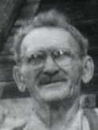
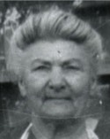

GMBH Tree - Person Sheet
GMBH Tree - Person Sheet


Census1911
Death10 Sep 1958, Nipawin, Saskatchewan, Canada67
BurialNipawin, Saskatchewan, Canada67
ReligionMennonite1730
FatherDavid D Waldner Jr. (1864-1928)
MotherMargaretha Waldner (1864-1920)
Spouses

Birth24 Apr 1884, Hutchinson, South Dakota, USA
Death16 Mar 1959, Nipawin, Saskatchewan, Canada67
BurialNipawin, Saskatchewan, Canada67
ReligionMennonite1730
FatherWilhelm Janzen (1864-1934)
MotherSusanna Wollman (1867-~1889)
Marriage24 Apr 1904, Franklin, Manitoba, Canada67
ChildrenKatie (Died as Infant)
Samuel (Died as Infant)
Susanna (1907-1989)
Mabel (1909-1971)
Mary (1911-2005)
Wilhelm (Billy) (1913-1960)
Justina (Christina) (1915-1971)
Florence (1918-1983)
Margaret (Maggie) (1920-1999)
Dan (1921-)
Alex (1923-)
Frank (1926-1962)
Research notes for Jacob D. Waldner